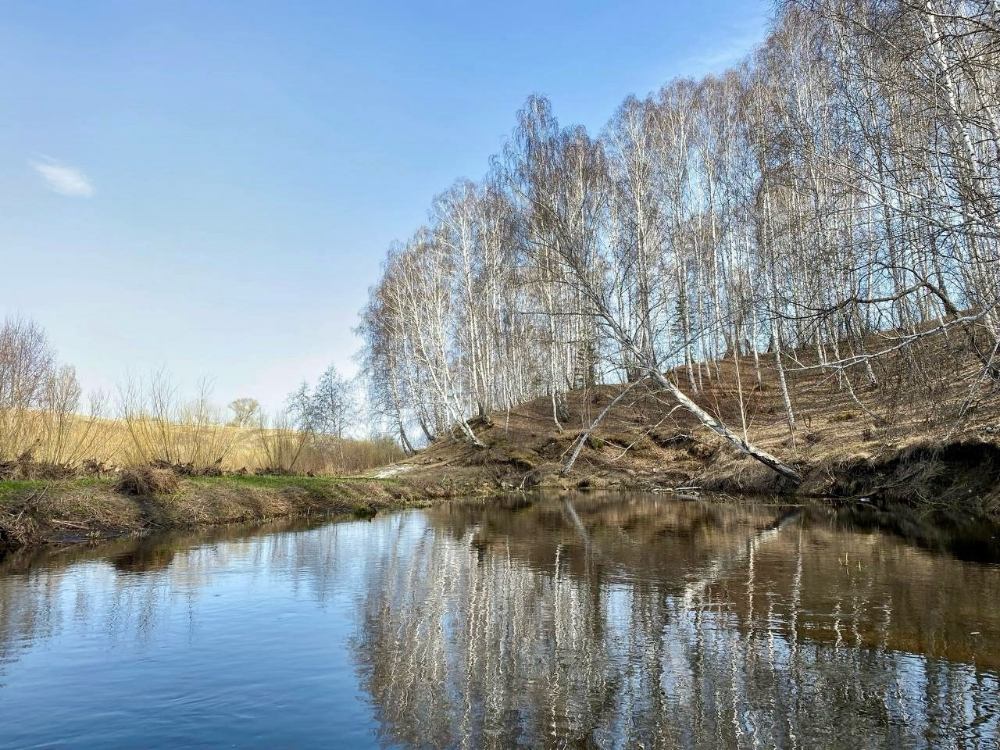
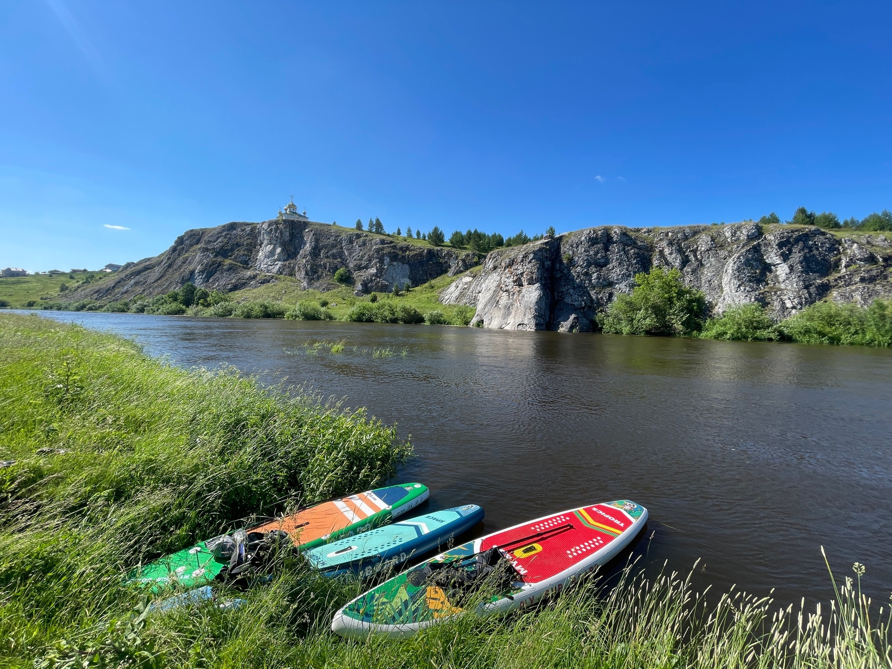

СПЛАВЫ-2024!
АПРЕЛЬ
Сплав №1. Река Каменка. Черноусова - Каменск-Уральский. 19,8км
11 апреля, сплав в одиночку
Сплав №2. Река Багаряк. Зотино - Чайкина. 15,9км
21 апреля, Даша Х., Сергей Х., Макар Х., Ирина Е.


МАЙ
Сплав №3. Река Чусовая. Каменка - скала Камень Высокий. 16,6км
15 мая, Даша Х., Сергей Х., Макар Х., Ирина Е.
Сплав №4. Река Бисерть. Бисерть - Старобухарово. 18,8км
25 апреля, Даша Х., Ирина Е.
ИЮНЬ
Сплав №5. Река Пышма. Сады у 44 квартала - Старопышминск. 12,8км
2 июня, Даша Х., Ирина Е.
Сплав №6. Река Серга. Оленьи ручьи - Михайловск. 31км
15-16 июня, Даша Х., Сергей Х., Макар Х., Ирина Е.
Сплав №7. Река Реж. Раскатиха - Катышка. 13,1км
30 июня, Даша Х., Сергей Х., Макар Х., Ирина Е.

ИЮЛЬ
Сплав №8. Река Чусовая. Подгорный - Раскуиха. 19,2км
14 июля, Даша Х., Сергей Х., Макар Х., Ирина Е.
Сплав №9. Река Койва. Кусье-Александровский - Усть-Койва. 34,5км
20-21 июля, Даша Х., Сергей Х., Макар Х., Ирина Е.
АВГУСТ
Сплав №10. Река Багаряк - река Синара. Багаряк - ЖД-мост. 31км
3 августа, Миша
Сплав №11. Река Исеть. Бобровский - Двуреченск. 14,5км
25 августа, Ирина Е.
Сплав №12. Река Каменка. Мухлынина - Каменск-Уральский. 27км
27 августа, сплав в одиночку
СЕНТЯБРЬ
Сплав №13. Река Чусовая. Крылосово - Прогресс. 17,6км
8 сентября, Даша Х., Сергей Х., Макар Х., Ирина Е.
Сплав №14. Река Исеть - река Каменка. Ревун - Каменск-Уральский. 28км